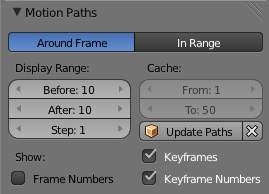
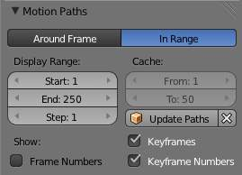

Visualization¶
There are some important visualization features in the 3D视图s that can help animation.
When the current frame is a keyframe for the current active object, the name of this object (shown in the bottom left corner of the 3D视图s) turns yellow.

Buttom: Current frame at 0. Top: Current frame is a keyframe for Cube.
Motion Paths¶
参考
This feature allows you to visualize the animation of objects by displaying their position over a series of frames.
{kind=link}
An animated cube with its motion path displayed.
{kind=link}
Motion paths panel.
Before we look at its options (all regrouped in the same Visualisations panel, in the Properties editor), let us first see how to display/hide these paths. You have to do it manually - and you have to first select the objects you want to show/hide the motion paths. Then:
- To show the paths (or update them, if needed), click on the Calculate Path button.
- To hide the paths, click on the Clear Paths button
Warning
Remember that only selected object and their paths are affected by these actions!
The paths are drawn in black with white dots indicating frames, and a blue glow around the current frame.
Options¶
- Around Frame
Around Frame, Display Paths of poses within a fixed number of frames around the current frame. When you enable this button, you rather get paths for a given number of frames before and after the current one (again, as with ghosts).
The Motion Paths Panel set to “Around Frame”
- In Range
In Range, Display Paths of poses within specified range.
The Motion Paths Panel set to “In Range”
- Display Range
- Before/After
- Number of frames to show before and after the current frame (only for ‘Around Current Frame’ Onion-skinning method)
- Start/End
- Starting and Ending frame of range of paths to display/calculate (not for ‘Around Current Frame’ Onion-skinning method)
- Step
- This is the same thing as the GStep for ghosts - it allows you the only materialize on the path one frame each n ones. Mostly useful when you enable the frame number display (see below), to avoid cluttering the 3D视图s.
- Frame Numbers
- When enabled, a small number appears next to each frame dot on the path, which is, of course, the number of the corresponding frame...
- Keyframes
- When enabled, big yellow square dots are drawn on motion paths, materializing the keyframes of their bones (i.e. only the paths of keyed bones at a given frame get a yellow dot at this frame).
- Keyframe Numbers
- When enabled, you will see the numbers of the displayed keyframes - so this option is obviously only valid when Show Keys is enabled.
- Cache
- From/To
- These are the start/end frames of the range in which motion paths are drawn. You cannot modify this range without deleting the motion path first.
- Calculate Paths/ Update Paths
- If no paths have been calculated, Calculate Paths will create a new motion path in cache. In the pop-up box, select the frame range to calculate. If a path has already been calculated, Update Paths will update the path shape to the current animation. To change the frame range of the calculated path, you need to delete the path and calculate it again.
{kind=link}
{kind=link}